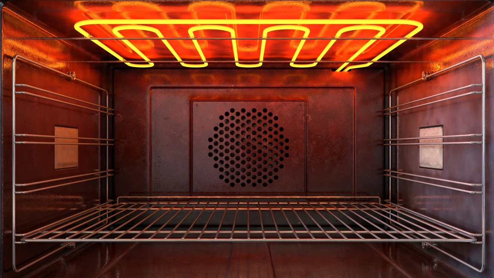
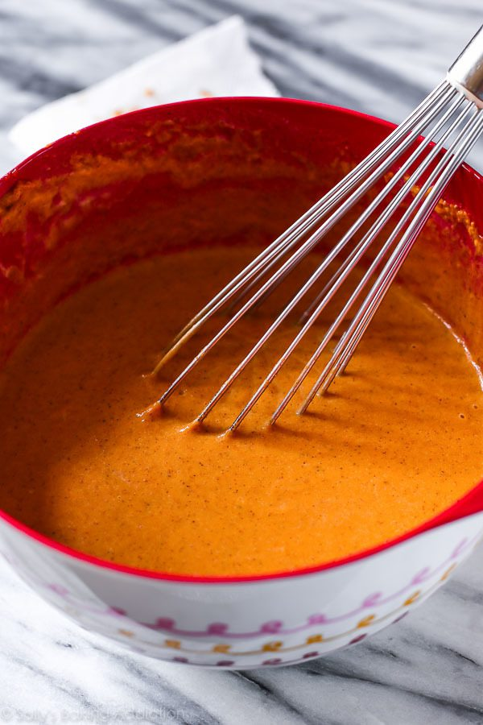
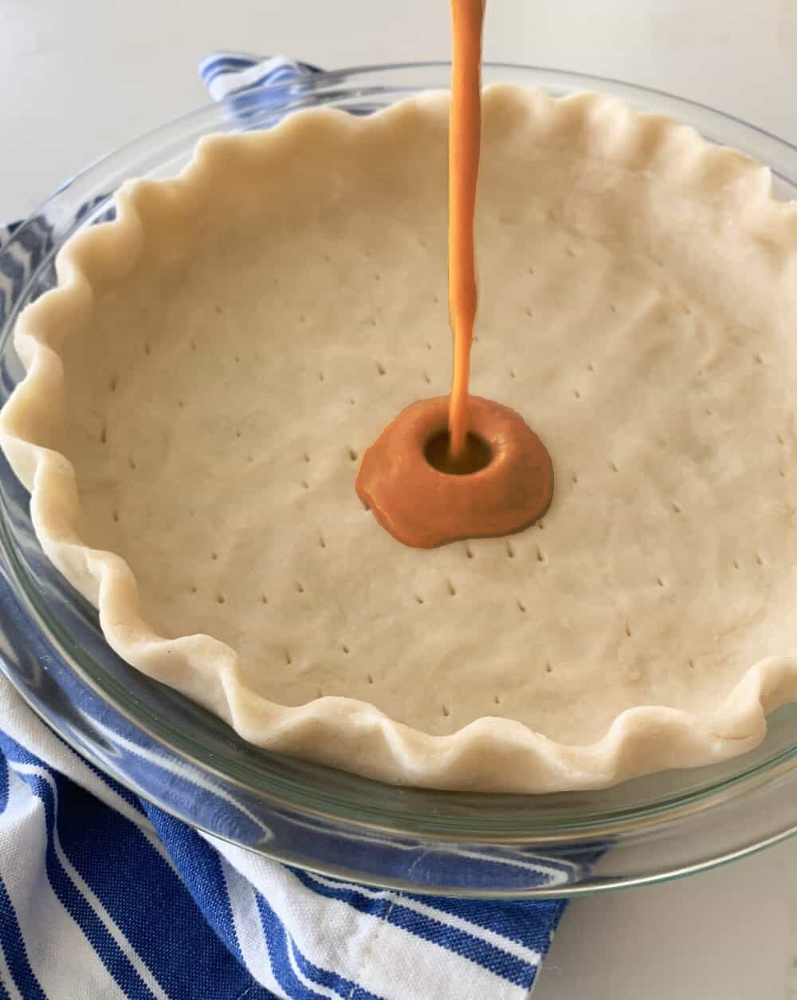
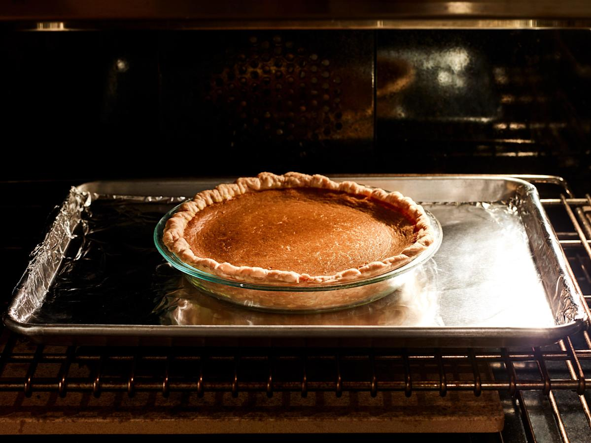
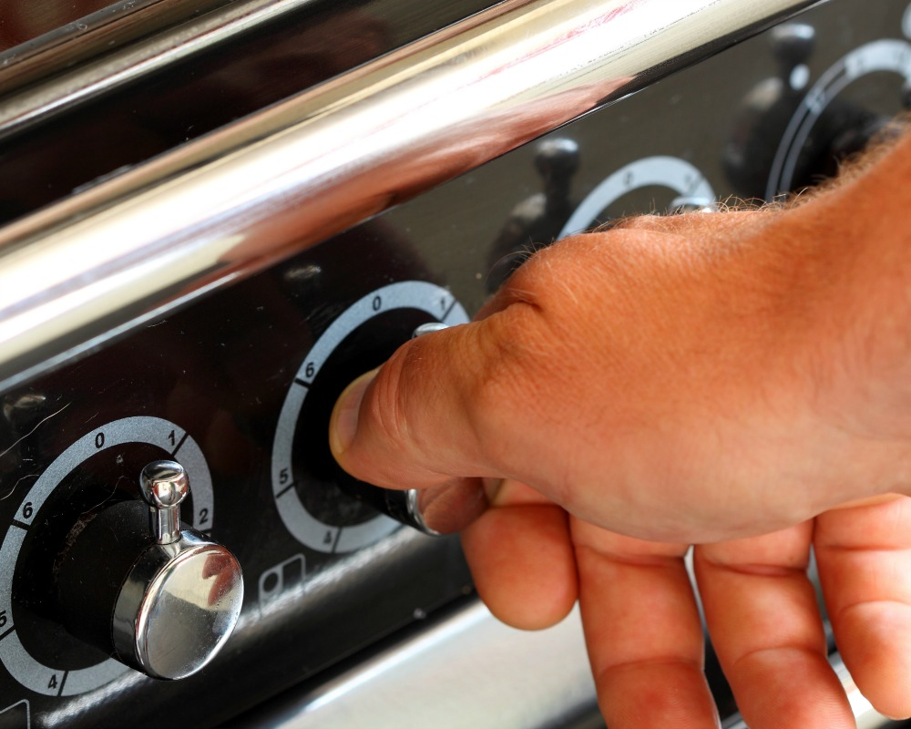

Ingredients
- 2 eggs
- 1 16 oz can pumpkin puree
- 1 14 oz can sweetened condensed milk
- 1 9 inch unbaked pie crust
Time Needed
- Prep: 10mins
- Cooking: 50mins
- Total: Approx 60 mins
Yield
Supplies
- Large mixing bowl
- 9 inch pie dish
- Baking sheet
Nutrition Information
- Calories: 309
- Protein: 7.5g
- Carbohydrates: 41.8g
- Fat: 13.2 g
- Cholesterol: 63.2mg
- Sodium: 333.6mg
Steps
-

1.
Preheat the oven to 425 degrees F (220 degrees C)
-
2.

Combine eggs, pumpkin puree, sweetened condensed milk, and pumpkin pie spice in a large bowl and mix until combined
-
3.

Fit pie crust into a 9-inch pie dish; pour pumpkin mixture into the crust

4.
Place pie on a baking sheet and bake in the preheated oven for 15 minutes

5.
Reduce heat to 350 degrees F (175 degrees C) and bake until filling is set, 35 to 40 minutes

6.
Enjoy!